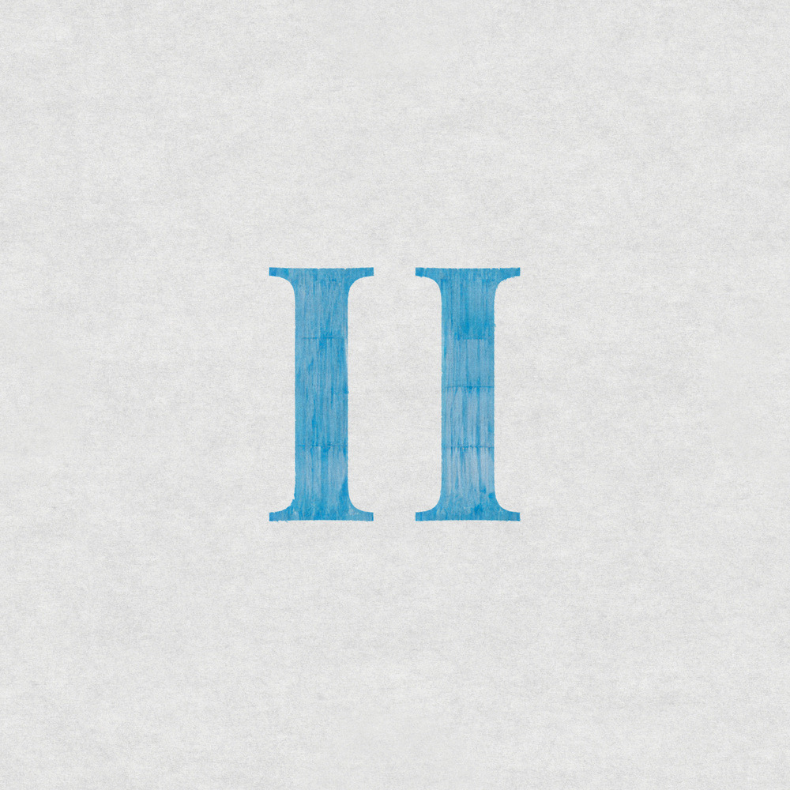

안녕하세요, 라보엠입니다.
오늘은 스텔라장의 정규 2집 타이틀곡 ‘워크맨(WALKMAN)’을 소개합니다. 이번 곡은 소니의 카세트 테이프 플레이어, 워크맨을 통해 세상을 바라보는 스텔라장만의 시선이 고스란히 담긴 작품입니다. 90년대 감성과 현대적 감각이 어우러진 이 곡은, 일상에 지친 우리에게 잠시 음악과 함께 걷는 여유를 선사합니다.
워크맨, 그 시절의 감성으로
‘워크맨’이라는 제목부터가 강렬하게 다가옵니다. 소니의 카세트 플레이어 워크맨은 한때 세상을 움직였던 혁신적인 아이템이었죠. 스텔라장은 이 워크맨을 통해 자신만의 음악적 세계와 시선을 풀어냅니다. 노래를 듣는 동안, 이어폰을 귀에 꽂고 동네 골목을 걷던 그 시절의 감성이 자연스럽게 떠오릅니다. 특히 이번 곡은 90년대 워크맨 시대의 감성을 현대적으로 재해석한 점이 인상적입니다. 사무실, 거리, 전철 등 현실적인 공간을 배경으로 하면서도, 연출은 몽환적이고 팝아트적인 분위기로 꾸며져 있습니다.
뮤직비디오와 앨범의 분위기
뮤직비디오 역시 워크맨의 감성을 한껏 살렸습니다. 현실적인 공간과 몽환적인 연출이 어우러지며, 보는 이로 하여금 음악과 함께 걷는 산책자의 기분을 느끼게 합니다. 80년대 레트로 스타일의 애니메이션으로 제작되어 클래식한 영상미가 곡의 분위기를 더욱 극대화합니다.
정규 2집 전체를 관통하는 테마는 ‘자아실현’입니다. 스텔라장은 이번 앨범에서 자신의 이야기를 솔직하게 풀어내며, 타인의 시선이나 유행에 휘둘리지 않고 자신만의 길을 걷는 모습을 보여줍니다. ‘워크맨’은 그 중심에서, 음악을 통해 세상을 바라보고, 자신만의 색깔로 일상을 채워나가는 스텔라장의 철학을 상징적으로 담아냅니다.
스텔라장2집 워크맨 가사와 멜로디, 그리고 스텔라장의 시선
He walks He walks He walks
He walks He walks He walks
무선이 대세라는 21st century
줄 이어폰을 꽂으니
옛날 사람 따로 없지
But I like it better like this
Time flies 매일 더 빠르지
그럴수록 더욱 천천히
여유롭게 머무르기
Yeah I like it better like this
(Side A)
플레이 버튼을 눌러 Tracks waiting in line
(Side B)
뒤집어 다시 듣고 싶은 노래 rewind
걸음은 조급하지 않게
늦은 건 없어 내 페이스로 갈게
아, 이건 한 번 더 들어야 돼
다시 듣고 싶은 노래 rewind
He walks
He walks, he walks, he walks
My walkman walking
My walkman walking
He walks
He walks, he walks, he walks
My walkman walking
My walkman walking
탁 트인 하늘을 들이마셔
두 눈으로 담아내 horizon
불어오는 산들바람
들려오는 background music
Your love's put me on the Top of the world
(Side A)
플레이 버튼을 눌러 Tracks waiting in line
(Side B)
뒤집어 다시 듣고 싶은 노래 rewind
같이 걸어가 줄래
내 발의 속도 맞춰줄래
다시 듣고 싶은 노래 rewind
He walks
He walks, he walks, he walks
My walkman walking
My walkman walking
He walks
He walks, he walks, he walks
My walkman walking
My walkman walking
구관이 명관 영어론 Oldies but goodies
난 이런 걸 좋아하지
Someone told me I was old-fashioned
반박할 수 없지 그래서 조금 분하지만 뭐
I like it better like this
He walks
He walks, he walks, he walks
My walkman walking
My walkman walking
He walks
He walks, he walks, he walks
My walkman walking
My walkman walking
곡의 도입부는 반복되는 “he walks, she walks, my Walkman walking”이라는 가사로 시작해, 듣는 이의 귀를 단번에 사로잡습니다. 경쾌한 리듬과 레트로한 신스 사운드가 어우러지며, 마치 워크맨을 들고 거리를 걷는 듯한 착각을 불러일으킵니다.
스텔라장은 “누군가 나를 올드패션드하다고 해도, 나는 내 워크맨과 함께 걷는 게 더 좋다”는 메시지를 담아, 남의 시선을 신경 쓰지 않고 자신만의 속도로 세상을 바라보는 자유로움을 노래합니다. 이 곡의 가사는 단순한 일상 묘사를 넘어, 음악을 통해 세상을 새롭게 바라보는 시선을 담고 있습니다. 이어폰 너머로 들려오는 음악이 배경음악이 되어, 평범한 하루도 특별하게 느껴지게 만듭니다. 워크맨을 통해 듣는 음악은 현실의 소음과는 또 다른 차원의 위로와 영감을 전해줍니다.
스텔라장2집 수록곡별 감상
‘이별 amazing’
이번 앨범에서 가장 인상적인 트랙 중 하나입니다. 이별의 순간을 담담하면서도 솔직하게 노래합니다. 스텔라장 특유의 위트가 묻어나는 가사와, 담백한 멜로디가 어우러져 쓸쓸함과 따뜻함이 공존하는 곡입니다. 이별의 아픔을 지나 다시 일상을 살아가는 우리 모두의 이야기를 담고 있어, 듣는 이의 마음에 오래 남습니다.
‘우산이 필요해’
잔잔한 피아노와 어쿠스틱 기타가 어우러진 곡입니다. 갑자기 내린 소나기처럼 예상치 못한 감정에 젖는 순간을 노래합니다. 스텔라장의 담백한 보컬과 섬세한 가사가 어우러져, 듣는 이의 마음에도 촉촉한 여운을 남깁니다.
‘Polaroid’
폴라로이드 사진처럼 한순간을 영원히 간직하고 싶은 마음을 담은 곡입니다. 레트로한 사운드와 몽글몽글한 멜로디가 어우러져, 추억을 상자 속에 조심스레 담아두는 듯한 따뜻함이 느껴집니다.
‘그림자’
조금 더 어두운 색채의 곡으로, 자신의 그림자와 대화하는 듯한 독특한 시선이 돋보입니다. 불안과 두려움, 그리고 그 속에서 피어나는 작은 용기를 노래합니다. 스텔라장의 깊어진 감정선이 인상적으로 다가옵니다.
‘밤 산책’
하루를 마무리하며 조용히 걷는 밤길의 풍경을 담았습니다. 잔잔한 스트링과 부드러운 보컬이 어우러져, 듣는 이로 하여금 자신만의 밤 산책길을 떠올리게 합니다. “불빛 아래 나만의 속도로 걷는다”는 가사가 특히 마음에 남습니다.
번역가 황석희와의 콜라보
스텔라장의 노래는 불어와 영어 가사도 많아 이번에 황석희 번역가와 특별한 콘텐츠를 만들었습니다. 1번트랙 What Makes You? 는 전부 영어로 되어 있어 황석희 번역가와 한글로 번역하는 시간을 가졌습니다.
맺음말
‘워크맨’은 스텔라장만의 따뜻한 시선과 음악적 실험정신이 빛나는 곡입니다. 이번 곡에서 스텔라장은 익숙한 어쿠스틱 기반에 레트로 감성을 더하고, 몽환적인 분위기를 극대화한 편곡으로 새로운 음악적 시도를 선보였습니다. 90년대 워크맨의 아날로그적 감성과 현대적 사운드가 조화롭게 어우러지며, 듣는 이로 하여금 과거와 현재를 넘나드는 음악 여행을 떠나게 만듭니다. 카세트 플레이어 워크맨을 통해, 스텔라장이 바라본 세상은 조금 더 느리고, 조금 더 자유롭습니다. 음악과 함께 걷는 시간, 그 속에서 나만의 색깔을 찾고 싶은 모든 이들에게 이 곡을 추천드립니다.
